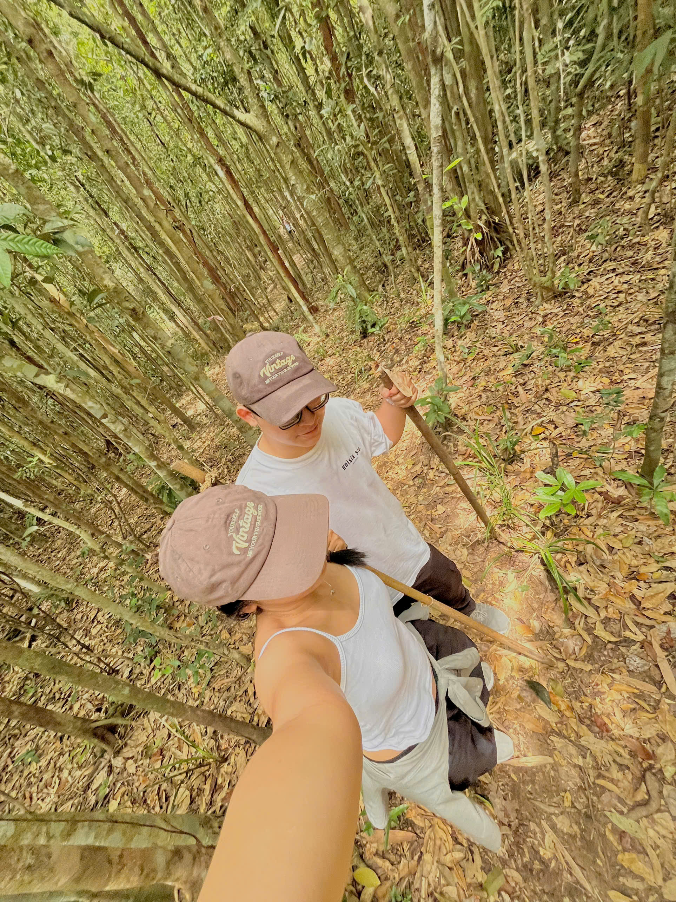
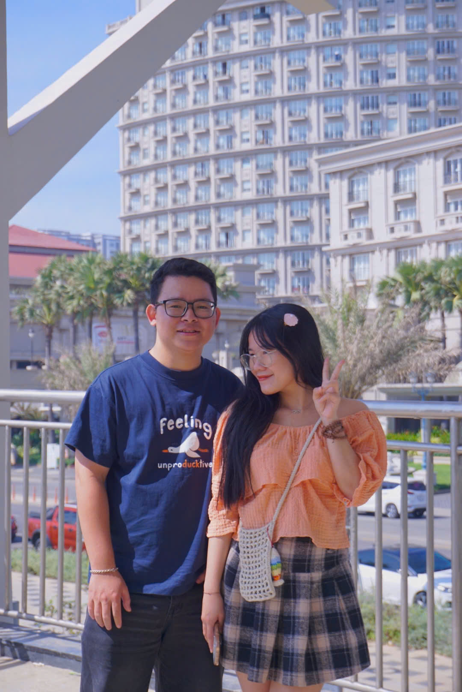
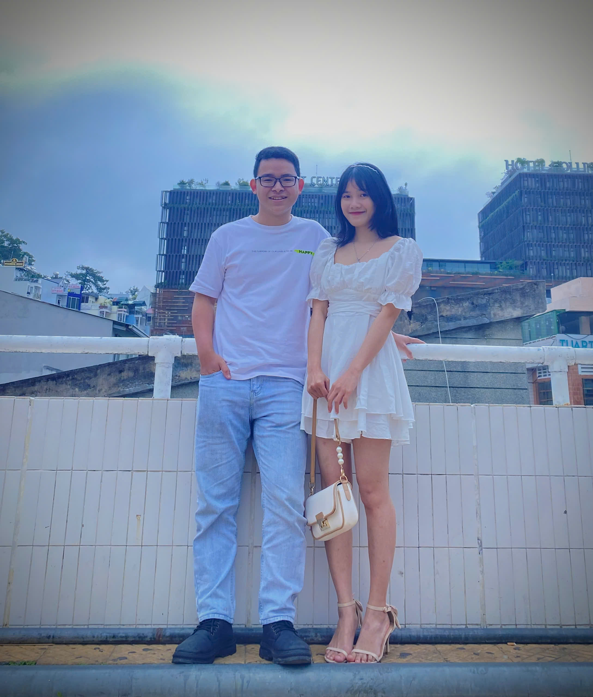
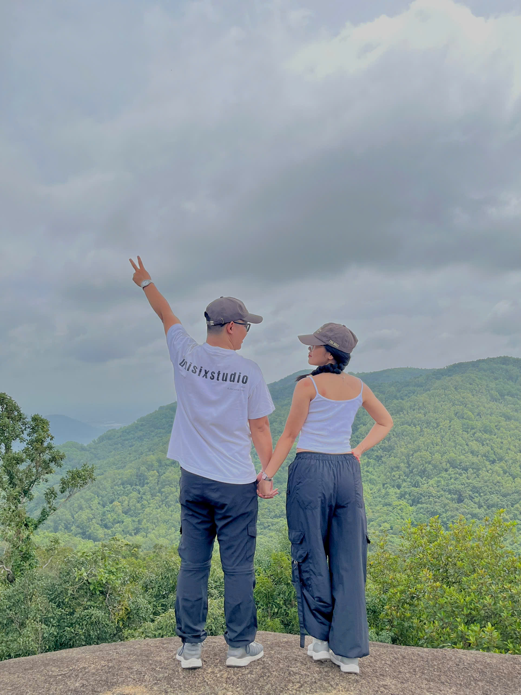
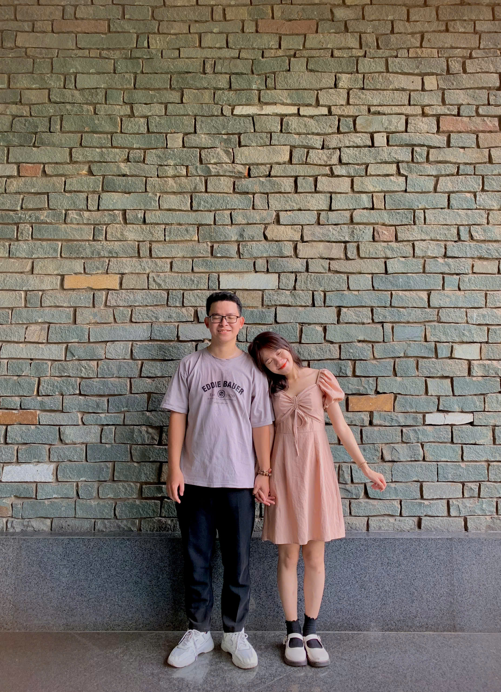
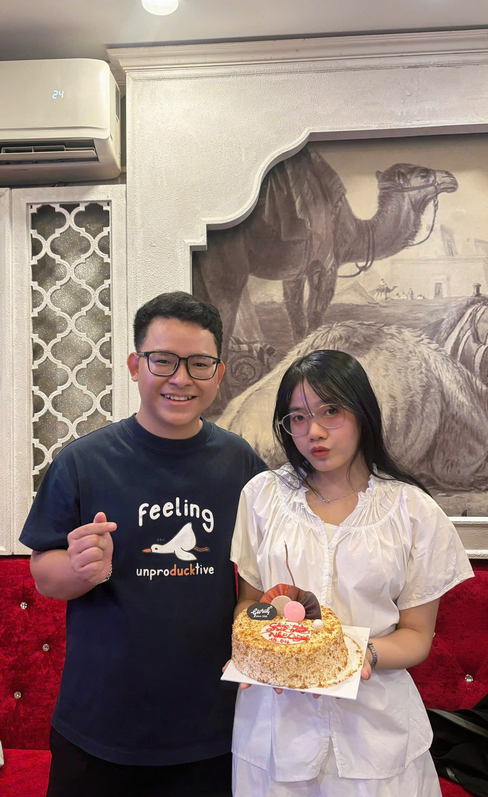

18.04.2022 - 18.04.2027
Mình và Em
5 năm yêu nhau, 5 năm có Quỳnh ở cạnh Huy trong những ngày bình thường nhất và cũng đáng nhớ nhất.
Anniversary
5 năm không phải là quá dài, nhưng đủ để mình biết em quan trọng thế nào.
Từ ngày 18/04/2022, mọi thứ dần có thêm một người để nhớ, để thương, để kể những chuyện nhỏ mỗi ngày. Website này là một góc nhỏ giữ lại vài khoảnh khắc của Mình và Em.
Our moments
Những khoảnh khắc mình muốn giữ lại






Our timeline
Hành trình 5 năm của Mình và Em
-
18.04.2022
Ngày mình bắt đầu
Từ một ngày rất đặc biệt, Huy có thêm Quỳnh trong những câu chuyện, những dự định và cả những điều nhỏ xíu hằng ngày.
-
Những năm đầu
Học cách thương nhau
Mình cùng nhau đi qua những ngày vui, những lúc giận hờn, rồi hiểu nhau hơn bằng sự kiên nhẫn và thật lòng.
-
Từng khoảnh khắc
Những bức ảnh, những lần bên nhau
Có những kỷ niệm không cần quá lớn lao. Chỉ cần nhìn lại ảnh, mình vẫn nhớ cảm giác lúc đó có em ở cạnh.
-
18.04.2027
Tròn 5 năm
Cảm ơn em vì đã ở lại, đã thương, đã cùng mình đi đến hôm nay. Mong những năm sau vẫn là Mình và Em.
For Quỳnh
Gửi Em, người đã ở cạnh Mình suốt 5 năm qua
Quỳnh à, vậy là Mình và Em đã đi cùng nhau được 5 năm rồi. Nghĩ lại thì khoảng thời gian đó có rất nhiều điều đã thay đổi, nhưng có một điều vẫn luôn làm Huy thấy ấm lòng: đó là trong hành trình này, Huy có em.
Cảm ơn em vì đã ở cạnh mình qua những ngày vui, những ngày mệt, cả những lúc hai đứa chưa thật sự hiểu nhau. Cảm ơn em vì sự dịu dàng, vì những lần lắng nghe, vì cách em làm những điều bình thường trở nên đáng nhớ hơn.
Huy không dám nói mọi thứ lúc nào cũng hoàn hảo, nhưng Huy biết mình luôn trân trọng tình yêu này. Trân trọng từng khoảnh khắc được nắm tay em, được nhìn em cười, được cùng em lưu lại thêm một bức ảnh, thêm một câu chuyện, thêm một ngày bình yên.
5 năm là một cột mốc đẹp, nhưng Huy mong nó chỉ là một đoạn đầu trong câu chuyện dài hơn của Mình và Em. Mong những năm sau, dù cuộc sống có đổi thay thế nào, mình vẫn chọn thương nhau bằng sự chân thành, kiên nhẫn và bình yên như vậy.
Thương em,
Huy